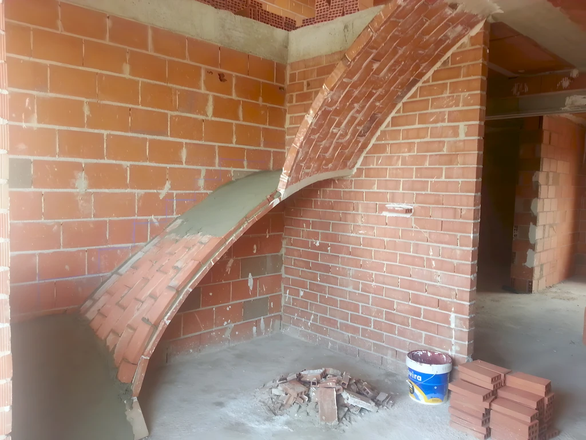
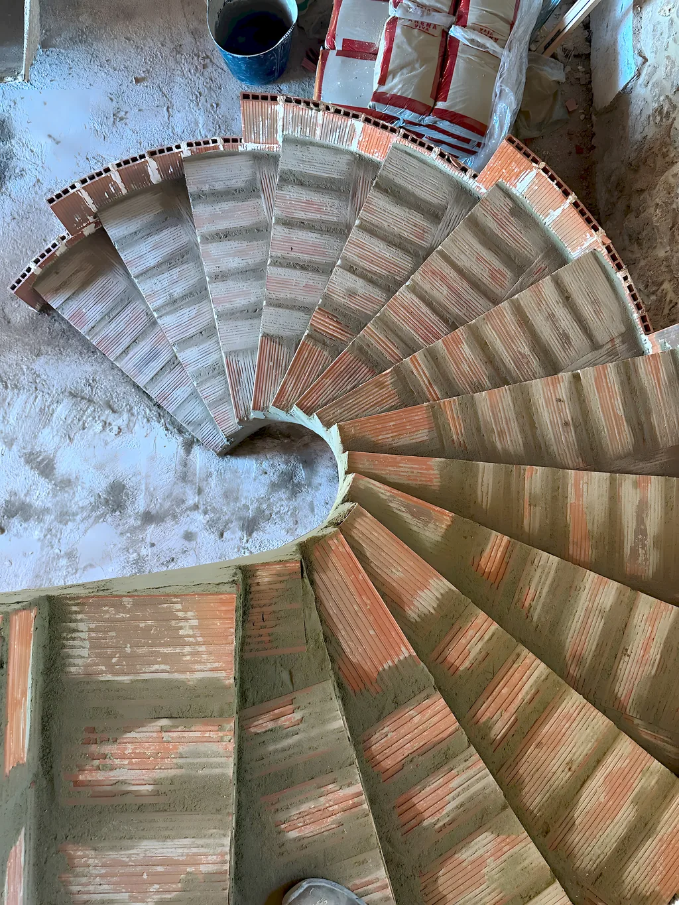
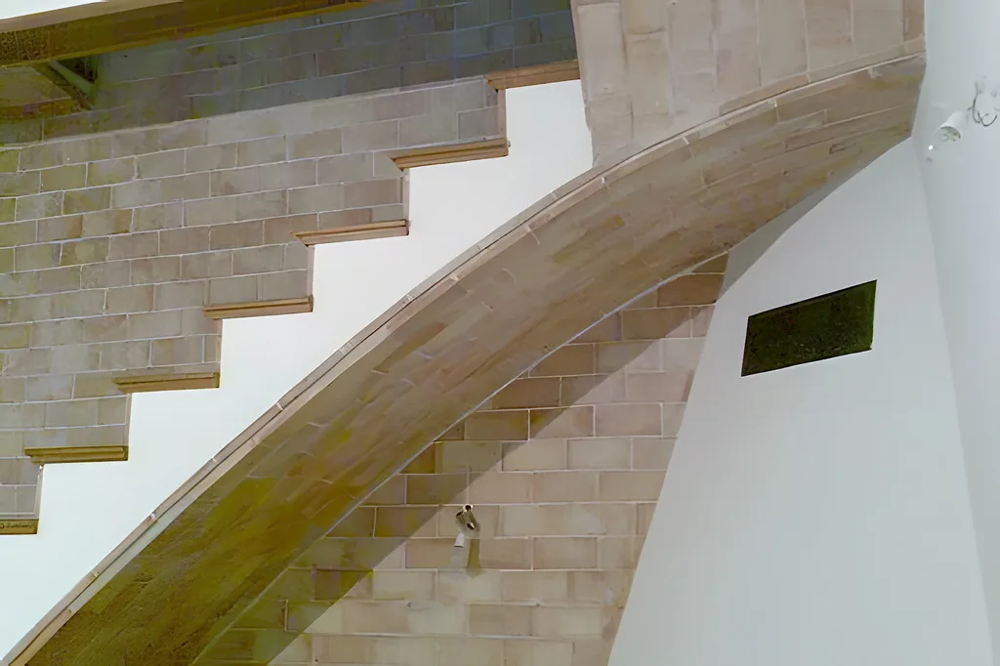

Bétera, Valencia · Toda España
Escaleras de bóveda, hechas a mano
Escaleras y bóvedas tabicadas de ladrillo, levantadas a mano por cuatro generaciones de escaleros.


Quiénes somos
Un oficio que pasa de padres a hijos
Somos la cuarta generación de escaleros de bóveda de la Comunidad Valenciana. Todas nuestras escaleras son tabicadas: hechas a mano, con ladrillo.
- Años 20Vicente Martínez Pérez empieza a construir escaleras de bóveda y enseña todos los secretos del oficio a Vicente Clavel.
- DespuésVicente Clavel se lo enseña a sus hijos, y así hasta hoy.
- HoyLa cuarta generación, con Gregorio García Clavel al frente, en Bétera (Valencia).
Lo que construimos
Escaleras y bóvedas a medida
De caracol, redondas, de espiga, en doble tirada… Contamos con experiencia en todo tipo de escaleras de bóveda, y también en bóvedas y bioconstrucción.
Escaleras a la catalana
Se sujeta solo al principio y al final. Deja libre todo el hueco de debajo.
Sin apoyos3 fotosEscaleras de caracol
Los peldaños giran en hélice hasta la siguiente planta. Ideal cuando falta espacio.
Ahorra espacio3 fotosEscaleras redondas o compensadas
Tramos rectos y curvos unidos con un paso gradual, sin cambios bruscos.
Paso gradual3 fotosEscaleras al aire
Peldaños encastrados en el muro que parecen flotar.
Peldaños volados3 fotos
Escaleras rectas
Las más pedidas: sencillas, funcionales y elegantes.
La más pedida3 fotos
Bóvedas de ladrillo
Arcos de ladrillo que trabajan a compresión para cubrir un espacio.
A compresión3 fotos
Bioconstrucción
Construir con cal, ladrillo y materiales sanos, de bajo impacto.
Cal y ladrillo3 fotosPor qué tabicada
La forma más sencilla de unir dos plantas
Una escalera tabicada de ladrillo es la solución más sencilla para conectar plantas, y aguanta el paso del tiempo mejor que una de hierro.
Más rápida
Una escalera tabicada se levanta mucho antes que una con base de hormigón.
Más económica
Menos material, menos encofrado y menos días de obra.
Ocupa menos
Necesita mucho menos espacio que una escalera de hormigón.
Sin corrosión
Resiste mejor el paso del tiempo que el hierro u otros materiales que se oxidan.
Es la huella mínima de las escaleras más cómodas. Cuanto más espacio tenga la escalera, más cómoda será de subir y bajar: por eso empezamos siempre por estudiar el hueco.
Cómo trabajamos
Del primer contacto a la entrega
Escuchamos tu propuesta, la estudiamos y te presentamos el proyecto. Disfrutamos de nuestro trabajo y celebramos cada obra como una oportunidad de seguir creciendo.
Estudio y presupuesto
Estudiamos tu propuesta con calma y te presentamos un proyecto a tu medida, con un presupuesto detallado y sin dudas.
Planificación
Planificamos y organizamos el trabajo contigo. Es la base para que el resultado sea el que esperas.
Ejecución y plazos
Levantamos la escalera y cumplimos los plazos de entrega. Es nuestro compromiso.
Trabajos
Ladrillo a ladrillo, obra a obra
Fotos reales de nuestras escaleras y bóvedas: en obra, con el ladrillo a la vista, y ya terminadas.
Pulsa una foto para verla en grande

Dónde trabajamos
Desde Bétera, a toda España
Estamos en Bétera (Valencia), pero no tenemos problema en desplazarnos, sea cual sea el tamaño de la obra.
- Toda la Comunidad Valenciana
- El resto de la Península: hemos trabajado en Zaragoza o en Villena, entre otros sitios
- Islas Baleares y Canarias
- Primera reunión por videollamada si estás lejos
Opiniones en Google
Lo que dicen nuestros clientes
«Muy profesionales, trato exquisito con Gregorio, rápidos y precio muy bueno. 100 % recomendables. Da gusto encontrarte con gente que trabaje así de bien.»
«Grandes profesionales, trabajadores y limpios. Estamos encantados con la escalera que nos habéis hecho. Es una maravilla, recomendable con los ojos cerrados.»
«Grandes profesionales. Muy buen trabajo a buen precio. Totalmente recomendables.»
«Gregorio, un buen profesional que sabe realizar perfectamente su trabajo. Recomendamos esta empresa en Zaragoza para la realización de escaleras.»
«Excelente profesional y persona, recomendado al 100 %. Si quieres profesionalidad, Escaleras de Bóveda Clavel.»
Preguntas frecuentes
Lo que más nos preguntan
Si tu duda no está aquí, llámanos o escríbenos: estaremos encantados de ayudarte.
¿Trabajáis fuera de la Comunidad Valenciana?
Sí. Hemos hecho y hacemos trabajos por toda España, incluidas Baleares y Canarias. Estamos en Bétera (Valencia) y nos desplazamos sin problema. Si estás lejos, antes podemos tener una reunión por videollamada para conocernos.
¿Hay que pedir permisos para hacer la escalera?
Por lo general, solo si la obra afecta a elementos comunes del edificio. Las obras que no alteran la seguridad, la estructura ni la configuración exterior no suelen necesitar la autorización de la comunidad de vecinos.
¿Cómo calculo mi futura escalera?
Lo primero es el espacio que va a ocupar. Cuanto más espacio, más cómoda: las escaleras más cómodas tienen huellas de al menos 27 cm. Te ayudamos en una primera cita sin compromiso, por videollamada si estás fuera de la Comunidad Valenciana.
¿Cuánto cuesta y cuánto tarda?
Depende de cada proyecto. Por eso lo estudiamos y planificamos al detalle desde el primer contacto: necesitamos conocer las medidas y el lugar. Somos directos y transparentes, y cumplimos los plazos que fijamos.
¿Qué acabados puede llevar?
Mármol, piedra, acero, vidrio, moqueta o madera. Para el peldañeado la madera es la favorita: cómoda y fácil de limpiar, aunque pide algo de mantenimiento. Lo ideal es que armonice con las estancias de alrededor, o que haga contraste a propósito.
¿Qué tipo de escalera necesito?
Hay tres grandes familias: rectas (de uno o varios tramos), curvas (circulares, ovaladas, elípticas o de caracol) y compensadas, que combinan tramos rectos y curvos con giro de 90° o de 180°. Cuéntanos tu espacio y te aconsejamos.
¿Son seguras?
Llevamos cuatro generaciones haciendo escaleras en muchas regiones de España y no escatimamos ni en materiales ni en mano de obra. Si lo deseas, al terminar se puede hacer una prueba de carga (se presupuesta aparte).
Contacto
Hablemos de tu escalera
Para el presupuesto necesitamos conocer tu proyecto: las medidas y el lugar. Si estás lejos, empezamos con una videollamada.
- 605 01 81 87Llamadas y WhatsApp
- Carrer Bufilla, 2, 46117 BéteraValencia · Trabajamos en toda España
- Lunes a viernes8:00–13:00 y 16:00–20:00Sábado9:00–13:00DomingoCon cita